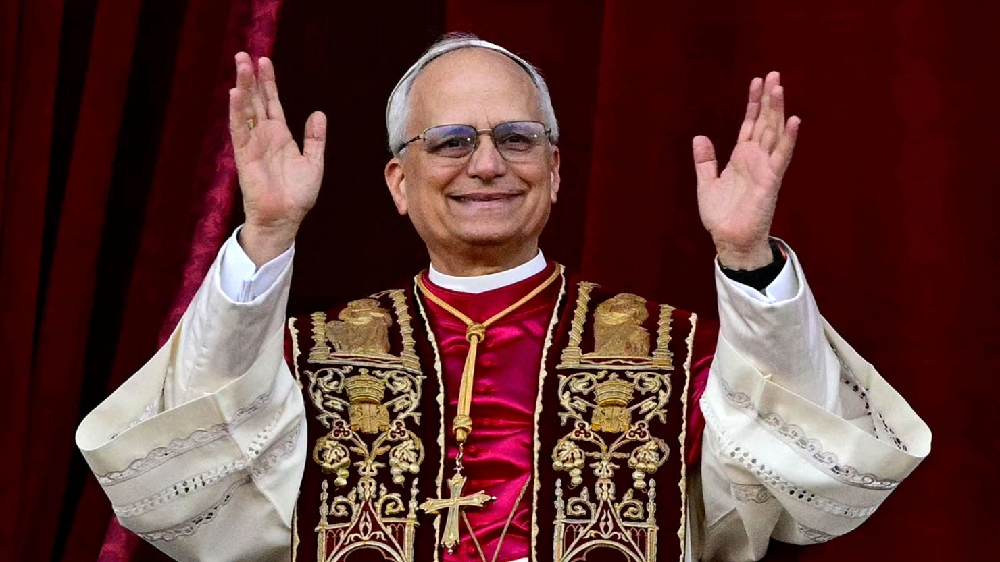
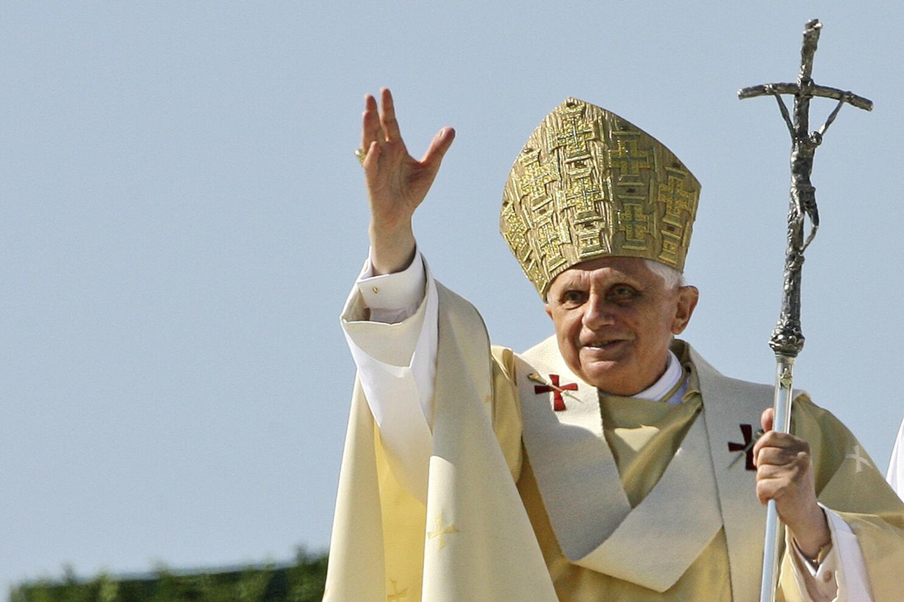
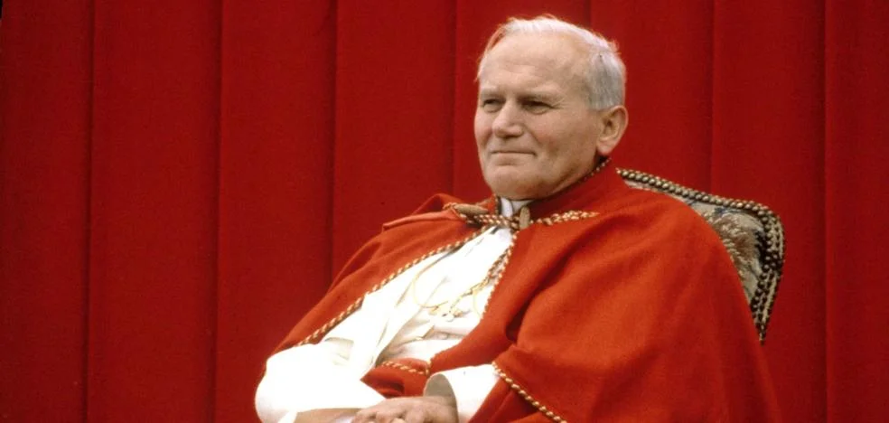
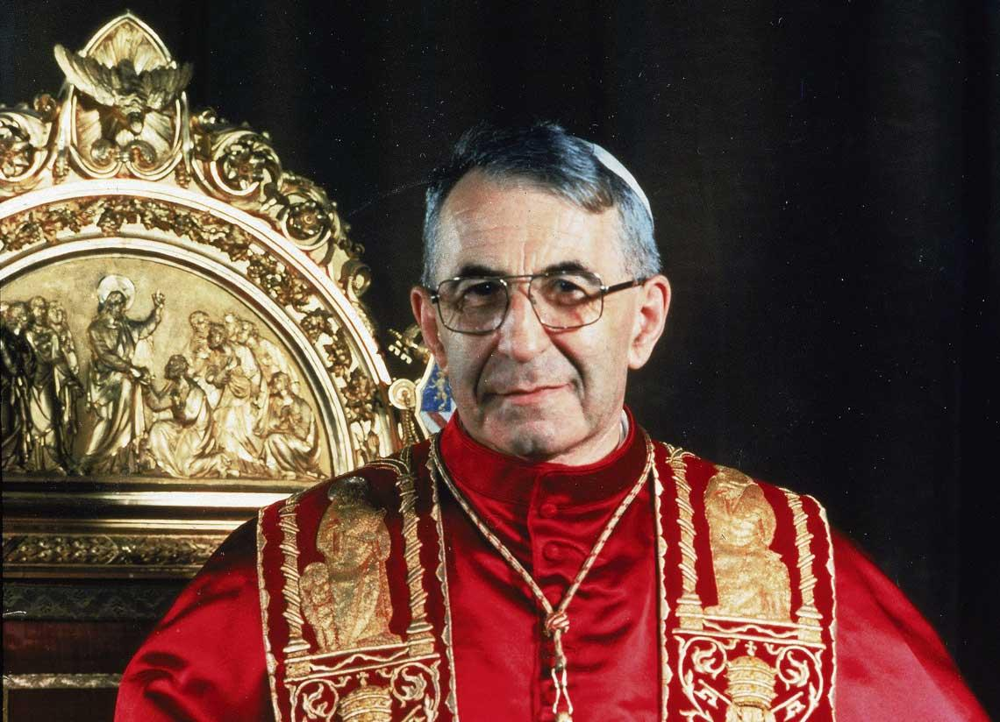
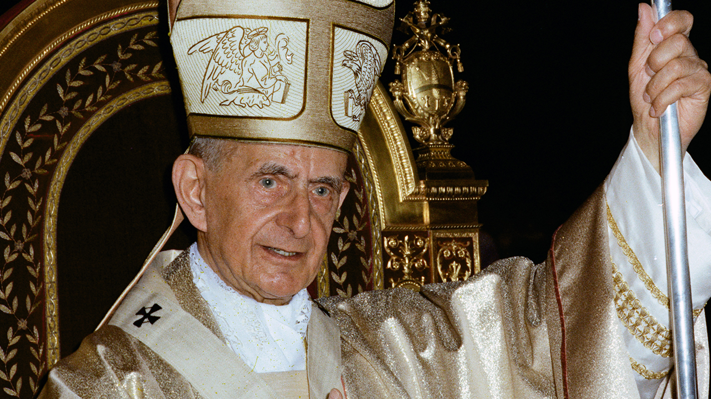

León XIV (2025-presente)
Primer papa estadounidense y agustino; prioriza puentes culturales y justicia laboral en la era digital.

Francisco (2013-2025)
Jesuita argentino; promovió una Iglesia humilde, ecológica y cercana a los marginados.

Benedicto XVI (2005-2013)
Teólogo alemán; defendió la ortodoxia doctrinal y renunció por salud, gesto inusual en siglos.

Juan Pablo II (1978-2005)
Polaco carismático; clave en la caída del comunismo y promotor del ecumenismo y la juventud.

Juan Pablo I (1978)
Italiano de trato afable; su pontificado duró solo 33 días, generando conmoción mundial.

Pablo VI (1963-1978)
Italiano moderado; aplicó el Concilio Vaticano II y abordó temas sociales y éticos complejos.